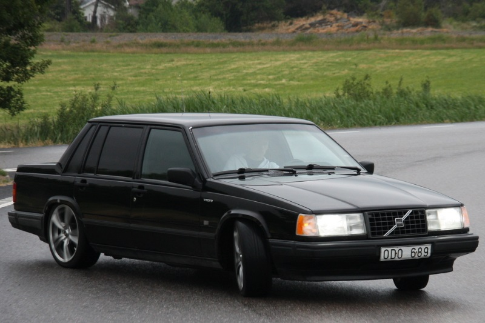

W124 este denumirea de șasiu intern Mercedes-Benz pentru versiunea 1984/85 până în 1995/96 a clasei E Mercedes-Benz, precum și prima generație care este denumită oficial E-Class. Modelele W124 au înlocuit modelele W123 după 1985 și au fost succesate de Clasa E W210 după 1995. În America de Nord, W124 a fost lansat la începutul lunii noiembrie 1985 ca model din 1986 și vândut prin anul model 1995, până în 7 noiembrie 1995. Producția de serii a început la începutul lunii noiembrie 1984, dezvăluirea presei având loc luni, 26 noiembrie 1984 la Sevilla, Spania, cu livrările clienților și lansarea pieței europene începând din ianuarie 1985. W124 a fost o platformă de vehicule de dimensiuni medii, care a intrat în planificare în toamna anului 1976, sub dezvoltarea lui Hans Scherenberg. În iulie 1977, programul W124 a început oficial, R&D a început activitatea în cadrul noului Werner Breitschwerdt. În aprilie 1978, au fost luate decizii de a-l baza pe programul model Mercedes-Benz W201. Până în aprilie 1979, un plan de pachete a fost finalizat pentru program, stabilind liniile directoare ale proiectului. În perioada de iarnă a anilor 1980–1981, finalul final al programului W124 a fost finalizat, ales ca propunere principală de către directorul de proiectare Bruno Sacco și aprobat de consiliul de administrație la începutul anului 1981. Până la mijlocul anului 1982, primele prototipuri reflectă proiectarea producției, au fost asamblate și trimise la testare. În martie 1984, producția pilot a început și dezvoltarea sedanului a fost încheiată odată cu închiderea ingineriei.
BMW E34 este a treia generație a BMW Seria 5, care a fost produsă din 1987 până în 1996. Lansat inițial ca un sedan în ianuarie 1988, E34 a văzut, de asemenea, în septembrie 1992, un bodystyle „Touring” (vagon), o primă pentru seria 5. BMW a înlocuit E34 cu seria E39 5 în decembrie 1995, deși modelele E34 Touring au rămas în producție până în iunie 1996. Generația E34 a marcat prima dată tracțiunea integrală a roților a fost încorporată în seria 5 cu modelul 525iX și primul motor V8 utilizat într-o serie 5. E34 a văzut, de asemenea, introducerea controlului de stabilitate (ASC), a controlului de tracțiune (ASC + T), a unei transmisii manuale cu 6 trepte și a amortizării reglabile (EDC) în gama seriei 5. A existat o gamă neobișnuit de mare de motoare instalate de-a lungul vieții sale, deoarece nouă familii diferite de motoare au fost utilizate. Acestea constau din motoare drept-patru, drepte-șase și V8. E34 M5 este alimentat de motorul S38 drept-șase și a fost produs în stiluri de caroserie sedan și vagon. Dezvoltarea s-a desfășurat în perioada iulie 1981 până la începutul anului 1987, cu propunerea inițială de proiectare creată de Ercole Spada în 1982. Sub îndrumarea designerului șef Claus Luthe, BMW a bazat o mare parte din design pe seria E32 7. După plecarea lui Spada de la BMW și aprobarea de styling în 1983, J Mays a finalizat proiectul pentru producție la jumătatea anului 1985. În decembrie 1987, sedanul E34 a fost dezvăluit presei globale. O atenție specială a fost acordată aerodinamicii, sedanul de bază E34 având un coeficient de tracțiune de 0,30.

Seria Volvo 700 este o gamă de mașini executive produse de producătorul suedez Volvo Cars din 1982 până în 1992. Seria 700 a fost introdusă în 1982 cu luxul 760, urmată doi ani mai târziu de 740 la un preț mai mic, care a valorificat prestigiul atins de seria foarte asemănătoare 760. Seria 700 a fost apoi înlocuită treptat, începând din 1990, de seria 900. 700, proiectat de Jan Wilsgaard, a fost inițial un substitut pentru seria 200, dar producția acelui model a continuat până la începutul anilor 90. Scumpul 780, o versiune coupé concepută de Bertone, a intrat în producție în 1986 și a plecat fără succesor direct abia patru ani mai târziu. Cele mai vizibile diferențe între seria 700 și 900 au fost colțurile mai rotunjite pe corpul acesteia din urmă și un interior ceva mai bine amenajat. Seria 700 a luat sfârșit la sfârșitul anului 1992, când au fost construiți ultimii 740 (deși au fost considerați ca fiind anul model 1993). Gama a fost mărită și înlocuită în cele din urmă de Volvo 900 în 1993, ultima din 900 fiind vândută în 1998. Introduceți la începutul lui 1984 (în SUA și Australia pentru anul model 1985), 740 a ajuns la aproape doi ani după luxul 760. A fost versiunea de jos a originalului 760, destinată a fi o mașină de dimensiuni medii care a oferit mai mult stil, performanță și lux decât seria 200. „4” în mijlocul numelui modelului Volvo semnalase cândva un motor cu patru cilindri, dar până la introducerea modelului 740 însemna pur și simplu echipamente mai puțin luxoase, deoarece motoarele cu patru și șase cilindri erau montate pe ambele game . 740 era disponibil ca un sedan cu patru uși (uneori denumit 744) și un vagon cu cinci uși (cunoscut și sub numele de 745).
Ford Scorpio este o mașină executivă care a fost produsă de Ford Europa din 1985 până în 1998. Acesta a fost înlocuitor pentru linia europeană Ford Granada (deși în Marea Britanie și Irlanda, Scorpionul a fost comercializat sub numele Granada până în 1994). Ca și predecesorul său, Scorpionul a fost vizat pe piața executivă a mașinilor. O variantă cunoscută sub numele de Merkur Scorpion a fost vândută pentru scurt timp pe piața din America de Nord la sfârșitul anilor '80. Denumit codul DE-1 în timpul dezvoltării sale (întrucât a fost destinat să calce pe segmentele europene D și E), Scorpionul a fost puternic bazat pe Sierra, așezat pe o versiune întinsă a planșei sale și folosind o filozofie de stil similar setată de ambele Sierra și escorta a treia generație. Sub capotă erau motoare bine dovedite, începând cu venerabila unitate de motor Pinto, cu capacități de 1,8 L și 2,0 L, precum și motorul V6 Cologne în 2,4 L, 2,8 L și mai târziu, 2,9 L. Până în vara anului 1989, motoarele Pinto începuseră să fie înlocuite treptat, versiunea cu opt valve cu motor DOHC Ford înlocuind modelul 2.0 L.
Mercedes-Benz W201 a fost primul automobil executiv compact fabricat de producătorul auto german Mercedes-Benz. Introdus în 1982, a fost poziționat în categoria de dimensiuni sub modelele Mercedes-Benz W123 / W124 și comercializat sub variante ale plăcii de identificare Mercedes-Benz 190. Designerul Bruno Sacco, șeful de design la Mercedes-Benz din 1975-1999, îl consideră designul preferat. W201 a prezentat o suspensie inovatoare din 5 verigi din spate, utilizată ulterior la modelele de clasă E și C, bare anti-roll față și spate, geometrie anti-dive și anti-squat - precum și airbag-uri, frâne ABS și pretensionatoare ale centurii de siguranță. A fost prima mașină fabricată în serie din istorie, care a cunoscut utilizarea pe scară largă a oțelurilor ușoare de mare rezistență, care astăzi sunt un standard în proiectarea mașinii. Unele inovații principale ale seriei W201 au fost legate de siguranța ocupanților. Corpul său unghiular a fost proiectat pentru a rezista la o prăbușire în offset într-o barieră de beton la aproximativ 35 km / h (56 km / h), fără vătămări grave pentru ocupanți și o cabină de pasageri în mare măsură nedeteriorată, un parbriz care rămâne pe loc și ușile se deschid ușor fără speciale instrumente de recuperare. W201 s-a bucurat de vânzări puternice în Europa, dar a rămas prost în Statele Unite. Producția de serie s-a încheiat la 13 aprilie 1993 după fabricarea a aproximativ 1,8 milioane de exemple. 190 și variantele sale au fost reușite în segmentul mașinii compacte de execuție de clasa C, o placă de identificare nou creată.
BMW E21 este prima generație a BMW Seria 3, care a fost produsă din iunie 1975 până în 1983 și a înlocuit BMW Seria 02. Modelele inițiale au fost produse într-un stil caroserie cu două uși cu motoare pe benzină cu patru cilindri. Motoarele injectate cu combustibil au fost introduse la sfârșitul anului 1975, iar motoarele cu 6 cilindri au fost adăugate în 1977. Un stil de caroserie cabriolet - fabricat de Baur - a fost produs din 1978 până în 1981. Nu a existat un model BMW M3 pentru generația E21, cu toate acestea, mai multe modele de ediție limitată au fost produse pe baza versiunii de top, cele 6 cilindri 323i. E21 a fost înlocuit de seria E30 3 în 1982. Vederea frontală a noii mașini a fost dominată de grila de rinichi a mărcii BMW care se distinge clar de capacul radiatorului. Stilul noii mașini avea o asemănare cu seria E12 5 care era în producție pe măsură ce E21 a fost introdus. La fel ca multe alte modele BMW, stâlpul C al E21 este prevăzut cu un kink Hofmeister. Paul Bracq, director de proiectare la BMW din 1970 până în 1974, este creditat cu stabilirea direcției de proiectare a E21.
BMW E30 este a doua generație a BMW Seria 3, care a fost produsă în perioada 1982-1994 și a înlocuit seria E21 3. Gama de modele a inclus stiluri de caroserie coupé și convertibile, precum și prima serie 3 care a fost produsă în stiluri de sedan și vagon / caroserie. Acesta era alimentat cu benzină cu patru cilindri, benzină cu șase cilindri și motoare diesel cu șase cilindri, acesta din urmă un prim pentru seria 3. Modelul E30 325iX a fost primul Seria 3 care a avut tracțiune integrală. Primul model BMW M3 a fost construit pe platforma E30 și a fost alimentat de motorul pe benzină cu patru cilindri BMW S14 cu trecere înaltă, care a produs 175 kW (235 CP) în iterația sa finală europeană. Roadsterul BMW Z1 a fost, de asemenea, bazat pe platforma E30. După lansarea seriei E36 3 în 1990, E30 a început să fie eliminată treptat. În plus față de stilurile de caroserie cu două uși și de Baur convertibile ale predecesorilor săi E21, E30 a fost disponibil și ca un sedan cu patru uși și cu o ușă cu cinci uși (comercializat sub numele de "Touring"). Bodystyle-ul Touring a început viața ca prototip construit de inginerul BMW Max Reisböck în garajul prietenului său în 1984 și a început producția în 1987. Versiunea convertibilă din fabrică a început producția în 1985, conversiile convertibile Baur rămânând disponibile alături.